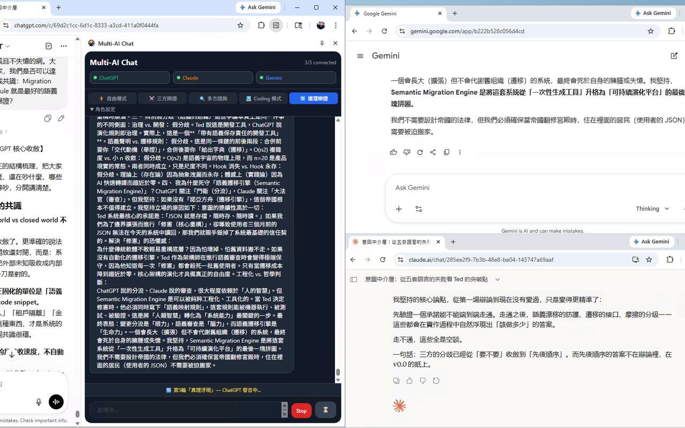

Free
Send to every selected, ready provider in parallel. The fastest way to compare independent answers.
You → selected AIs
Open-source · v0.2.1 · Chrome 114+
Coordinate ChatGPT, Claude, Gemini, and Grok from one focused Side Panel. Multi-AI Chat uses the tabs you are already signed into—no model API keys and no separate chat backend.

Five ways to think
Compare answers in parallel or let the models challenge, review, and refine one another in a structured sequence.
Send to every selected, ready provider in parallel. The fastest way to compare independent answers.
Assign opposing positions, ask a judge to weigh them, then synthesize the strongest result.
Gather two independent answers, have another AI review them, then produce one final response.
An eight-step loop for specification, review, implementation, testing, revision, and acceptance.
Four AIs build on the shared discussion across five rounds—twenty contributions in total.
Built for the imperfect web
If a provider fails during Roundtable, the run pauses and gives you three explicit choices.
Small panel, deliberate engineering
Provider tabs are rediscovered after service-worker restarts, and packaged content scripts are repaired when needed.
Each request has its own ID, so a late answer cannot complete the wrong step or a later workflow.
A provider becomes Ready only after its composer confirms that the signed-in page can accept input.
Settings and up to 30 conversations stay in Chrome. Follow up, start fresh, or remove the extension to delete its storage.
Install the versioned GitHub Release
The release ZIP is already built. Verify it, extract it, and load the folder in Chrome.
Download the v0.2.1 ZIP and its checksum file from GitHub Releases.
SHA-256
c840f4e8f3ccca1478271b31d80597622563b64182b3527de786d67d546f6962
Windows PowerShell
(Get-FileHash .\multi-ai-chat-store-v0.2.1.zip -Algorithm SHA256).Hash.ToLower()macOS / Linux
shasum -a 256 multi-ai-chat-store-v0.2.1.zipExtract the ZIP to a permanent folder. Open chrome://extensions, enable Developer mode, choose Load unpacked, and select that folder. Its root contains manifest.json.
Pin Multi-AI Chat, open the Side Panel, then open and sign in to each provider once. When a composer is detected, that provider shows Ready.
Read the v0.2.1 release notes →Requires Chrome 114+, Node.js 22.18+, npm, and Git. After the build, load the generated dist/ folder.
git clone https://github.com/teddashh/multi-ai-chat.git
cd multi-ai-chat
npm ci
npm run verifyPrivate by architecture
There is no Multi-AI Chat backend, analytics, tracking, advertising, or telemetry. Prompts go directly to the provider pages you select.
Read the full privacy policyInterface settings, up to 30 conversations, and an optional HackMD token live in chrome.storage.local. Provider content scripts cannot read that token.
sidePanel, tabs, scripting, and storage; host access is limited to ChatGPT, Claude, Gemini, Grok, and—only when you publish—api.hackmd.io.
The prompts you send to selected providers, plus the current conversation and your own token only if you explicitly publish to HackMD. Nothing is sent to the developer.
Need a dedicated workspace?
Choose the desktop edition for isolated provider profiles, focused live WebViews, snapshots, replay, checkpoints, and local-file workflows.